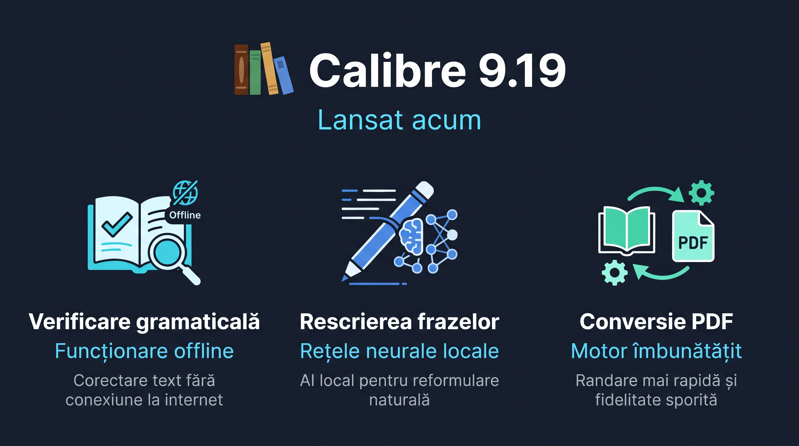

Calibre 9.19 a fost lansat: Verificare gramaticală offline, rescrierea frazelor cu rețele neurale locale și motor îmbunătățit de conversie PDF

Calibre, popularul manager open-source de cărți electronice (e-book), a primit versiunea 9.19, o actualizare majoră axată pe editarea și rafinarea textelor. Noua ediție introduce verificare gramaticală integrată în editorul de cărți, rescrierea frazelor bazată pe rețele neurale rulate exclusiv local (fără servicii externe), o reconstrucție mult mai precisă a documentelor PDF cu coloane multiple și îmbunătățiri extinse de accesibilitate.
1. Verificare gramaticală offline și rescrierea frazelor prin rețele neurale locale
Verificare gramaticală, de stil și tipografie: În timpul editării unei cărți, Calibre identifică acum problemele gramaticale, de stil și de tipografie direct în vizualizarea codului (code view), subliniind textul problematic și oferind sugestii de corectare prin meniul contextual (clic dreapta). Pentru o revizuire completă a întregii cărți, instrumentul Tools > Check grammar listează toate problemele detectate, permițând corectarea, ignorarea sau excluderea anumitor reguli.
Rescrierea frazelor pentru limba engleză: Pentru conținutul în limba engleză, Calibre 9.19 introduce o funcție de rescriere bazată pe rețele neurale, prin care utilizatorii pot solicita variante alternative pentru îmbunătățirea gramaticii, fluenței, clarității, simplității sau pentru adoptarea unui ton mai formal.
Procesare 100% locală (confidențialitate totală): Dezvoltatorii subliniază că întreaga procesare are loc local pe dispozitivul utilizatorului, fără a apela la servicii AI externe. Datele lingvistice necesare sunt descărcate doar cu confirmarea explicită a utilizatorului, la prima utilizare.
2. Conversie PDF avansată și optimizări EPUB / Content Server
Reconstrucție inteligentă a documentelor PDF: Motorul actualizat de intrare PDF recunoaște mult mai precis paragrafele, titlurile și aspectele pe mai multe coloane:
paragrafele care se întind pe mai multe pagini sau coloane sunt unite corect;
titlurile împărțite pe mai multe rânduri sunt reconstruite;
cuvintele despărțite în silabe la capăt de rând (cu cratimă) sunt reasamblate;
sunt recunoscute coloanele separate prin spații înguste și sunt eliminate anteturile repetitive de pagină (precum titlurile de capitole).
Content Server și căutare regională Amazon: Serverul de conținut (Content Server) permite acum descărcarea metadatelor și a copertelor direct din editorul său de metadate și acceptă parole care conțin caractere non-ASCII. Totodată, funcția Get Books folosește un browser pentru căutarea în magazinele Amazon, rezolvând o problemă care bloca afișarea rezultatelor din magazinele regionale din afara SUA.
Viteză sporită la conversie și validare: Generarea cuprinsurilor mari (tables of contents) și împărțirea documentelor HTML voluminoase în timpul conversiei EPUB sunt mai rapide, iar instrumentul de validare din editor procesează mai eficient corectările în masă pentru link-urile și identificatorii defecți.
3. Accesibilitate și remedieri pe Linux
Accesibilitate extinsă: Atât Content Server, cât și cititorul integrat (e-book viewer) primesc îmbunătățiri semnificative pentru navigarea de la tastatură și compatibilitatea cu cititoarele de ecran (screen readers) în ferestrele de dialog, notele de subsol pop-up, controalele de citire cu voce tare (read-aloud), controalele audio e-book, schemele de culori și evaluările cărților.
Corecții Linux și bug-uri rezolvate: Utilizatorii Linux beneficiază de o remediere pentru pictogramele lipsă din meniul system tray în anumite medii desktop. Alte corecții vizează compatibilitatea cu dispozitivele Kobo, restaurarea opțiunilor de sortare din listele de cărți (problemă introdusă în versiunea 9.16), conversia fișierelor RTF cu codări est-asiatice, thailandeze sau vietnameze, eliminarea duplicării paginilor de copertă la actualizare și gestionarea arhivelor ZIP deteriorate.